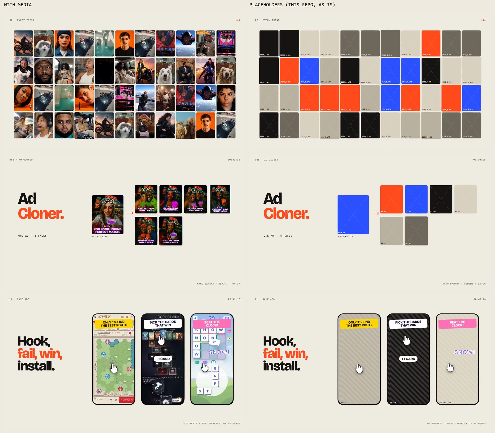

A 70-second reel written in Remotion. No cut in it is keyframed by hand. Every scene starts and ends on a cue in the music edit, and every pulse, zoom and step reads a hit detected in the track. Play it and watch the data underneath move with it. Source: github.com/Lalimec/showreel-code
decay() pulse: it jumps to full on a hit and falls off, the same value that drives zooms, scale and font width in the code.The repository renders as it is. Every clip, still and screenshot goes through one media component, and without the media folder it draws a labelled slot instead: striped and moving for video, crossed for stills. Everything around the slots, from the timing and layout to the type, the cursor and the overlays, comes from the same data. The soundtrack on this page is generated from the same data: a drum machine for every detected hit, plus the edit's effects, the bell run, stutters, bursts, riser, sweep and final impact, each on its cue. Pick "Live code, no media" above: that isn't a video, it's the reel's React code running in your browser with @remotion/player.

The music edit and its sections: drop, stutters, bell run, bursts, riser, fast run, sweep. Scene boundaries are cues, so re-cutting the music re-times the reel.
Kick, snare, hat, melody and bass onsets, detected per frequency band on Demucs stems cut with the same edit.
The big moments I tapped while listening, minus reaction time, snapped to the nearest kick.
Game ads replay real sessions recorded with Playwright: every tap and drag with its time and position.